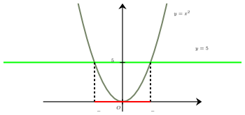
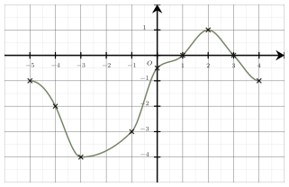
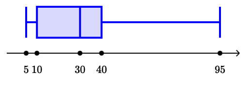
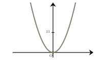
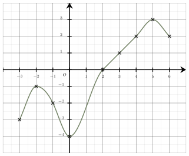
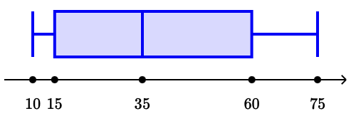

Séance 12 — Équations, suites et statistiques
On a représenté la parabole d’équation $y=x^2$.
On note $(I)$ l’inéquation, sur $\mathbb{R}$, $x^2 \leqslant 5$.
L’inéquation $(I)$ est équivalente à :
A.
$x=-\sqrt{5}$ ou $x=\sqrt{5}$
B.
$ -\sqrt{5} < x < \sqrt{5}$
C.
$x \leqslant -\sqrt{5}$ ou $x \geqslant \sqrt{5}$
D.
$ -\sqrt{5} \leqslant x \leqslant \sqrt{5}$
Pour résoudre graphiquement cette inéquation :
$\bullet$ On trace la parabole d’équation $y=x^2$.
$\bullet$ On trace la droite horizontale d’équation $y=5$. Cette droite coupe la parabole en $-\sqrt{5}$ et $\sqrt{5}$.
$\bullet$ Les solutions de l’inéquation sont les abscisses des points de la courbe qui se situent sur ou sous la droite.

On en déduit que l’inéquation $(I)$ est équivalente à : $ -\sqrt{5} \leqslant x \leqslant \sqrt{5}$.
La bonne réponse est la réponse D.
La forme développée de $A=(3y+1)\times3$ est :
A.
$3y+3$
B.
$9y-3$
C.
$9y+3$
D.
$9y+1$
On développe en utilisant la simple distributivité :
$\begin{aligned}
A&=(3y+1)\times3\\\\
&=3\times 3y+3\times1\\\\
&=\boldsymbol{9y+3}
\end{aligned}$
La bonne réponse est la réponse C.
On considère l’égalité $\dfrac{1}{C}=4-\dfrac{9}{10}$.
On a :
A.
$C=\dfrac{10}{31}$
B.
$C=\dfrac{31}{10}$
C.
$C=\dfrac{9}{46}$
D.
$C=-2$
$\dfrac{1}{C}=4-\dfrac{9}{10} = \dfrac{4 \times 10}{10} - \dfrac{9}{10} = \dfrac{40}{10} - \dfrac{9}{10} =\dfrac{31}{10}$
L’inverse de $C$ vaut $\dfrac{31}{10}$, donc $C=\boldsymbol{\dfrac{10}{31}}$.
La bonne réponse est la réponse A.
$\bullet$ $1{,}9\times 1{,}2=2{,}28\ \ \ \ \bullet$ $0{,}1\times 1{,}2=0{,}12\ \ \ \ \bullet$ $0{,}9\times 0{,}2=0{,}18\ \ \ \ \bullet$ $1{,}9\times 0{,}8=1{,}52$
En utilisant l’un des résultats précédents, déterminer le taux global d’évolution d’un article qui diminue de
$90\ $% dans un premier temps, puis qui augmente de $20\ $% dans un second temps.
A.
$-152\ $%
B.
$-70\ $%
C.
$-88\ $%
D.
$12\ $%
Diminuer de $90\ $% revient à multiplier par $0{,}1$ et augmenter de $20\ $% revient à multiplier par $1{,}2$.
Globalement cela revient donc à multiplier par $0{,}1\times 1{,}2=0{,}12$.
Multiplier par $0{,}12$ revient à multiplier par $1-0{,}88$.
Le taux d’évolution global est donc : $\boldsymbol{-88\ } $%.
La bonne réponse est la réponse C.
On considère une fonction $f$ dont la représentation graphique est tracée ci-dessous.

$f(-3) - f(-1)$ est égal à :
A.
$-2$
B.
$-5$
C.
$-1$
D.
$-4$
D’après le graphique, on lit :
$f(-3) = -4$ et
$f(-1) = -3$.
Donc $f(-3) - f(-1) = -4 - (-3) = \boldsymbol{-1}$.
La bonne réponse est la réponse C.
Une série statistique est résumée par le diagramme en boite ci-dessous, utilisez-le pour donner la valeur de la médiane de cette série.

A.
$40$
B.
$30$
C.
$25$
D.
$10$
La médiane est la valeur qui partage la série statistique en deux parties égales.
D’après le diagramme en boite, on a $Q_1=10$ et $Q_3=40$. La médiane se trouve au niveau du trait intermédiaire.
La médiane de la série est donc : $\boldsymbol{30}$.
La bonne réponse est la réponse B.
Devoirs — Séance 12 — Équations, suites et statistiques
On a représenté la parabole d’équation $y=x^2$.
On note $(I)$ l’inéquation, sur $\mathbb{R}$, $x^2 \leqslant 11$.
L’inéquation $(I)$ est équivalente à :

A.
$x \leqslant -\sqrt{11}$ ou $x \geqslant \sqrt{11}$
B.
$x=-\sqrt{11}$ ou $x=\sqrt{11}$
C.
$ -\sqrt{11} < x < \sqrt{11}$
D.
$ -\sqrt{11} \leqslant x \leqslant \sqrt{11}$
La forme développée de $A=-y(-2y-5)$ est :
A.
$2y^2+5y$
B.
$2y^2+5y^2$
C.
$2y^2-5y$
D.
$2y+5y$
On considère l’égalité $\dfrac{1}{z}=4+\dfrac{4}{5}$.
On a :
A.
$z=\dfrac{5}{24}$
B.
$z=\dfrac{4}{21}$
C.
$z=\dfrac{24}{5}$
D.
$z=\dfrac{8}{5}$
$\bullet$ $0{,}7\times 0{,}5=0{,}35\ \ \ \ \bullet$ $0{,}3\times 0{,}5=0{,}15\ \ \ \ \bullet$ $1{,}3\times 0{,}5=0{,}65\ \ \ \ \bullet$ $1{,}3\times 1{,}5=1{,}95$
En utilisant l’un des résultats précédents, déterminer le taux global d’évolution d’un article qui augmente de
$30\ $% dans un premier temps, puis qui diminue de $50\ $% dans un second temps.
A.
$-20\ $%
B.
$-35\ $%
C.
$65\ $%
D.
$-65\ $%
On considère une fonction $f$ dont la représentation graphique est tracée ci-dessous.

$f(5) - f(4)$ est égal à :
A.
$9$
B.
$1$
C.
$-1$
D.
$7$
Une série statistique est résumée par le diagramme en boite ci-dessous, utilisez-le pour donner la valeur de la médiane de cette série.

A.
$35$
B.
$37{,}5$
C.
$15$
D.
$60$